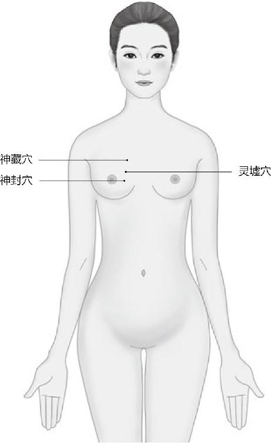
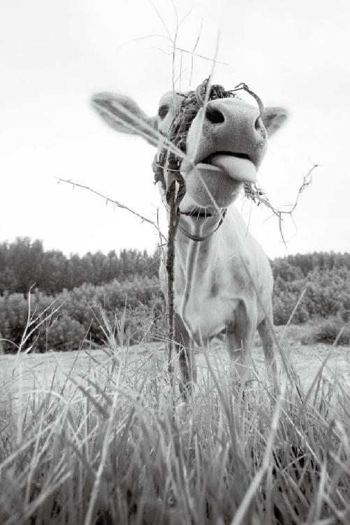
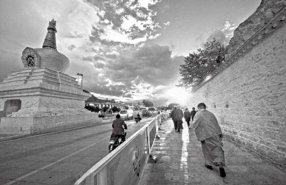
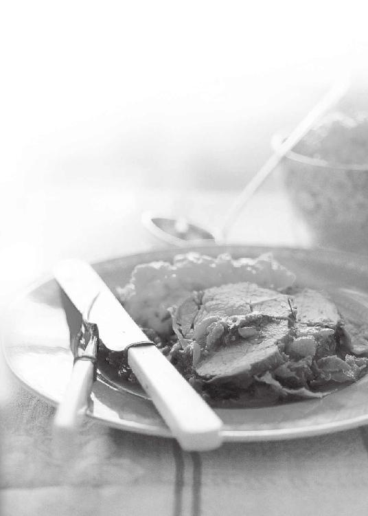
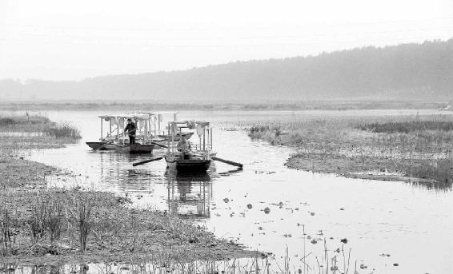

不要老纠缠于过去，特别是那些不好的事情或者是很牛的事情，正所谓好汉不提当年勇。
我们在把人当作人之前，还得把他当作个动物。
我们现在都是意淫，想自己理想的东西，然后强加给别人。人家本来不想要这个东西，很痛苦；你却觉得别人不接受你，也很痛苦。最后搞得大家都很痛苦。
“安”久了以后，就会“思危”，活的时间长了就想追求刺激，追求危险。这叫“居安思危”，我们以前都想错了！
很多人问什么叫好老婆？好老婆就像一件贴身的内衣，你感觉不到她的存在，但是却很舒服。如果什么时候你感觉到内衣的存在了，就是出问题了，已经不服了。
经文：
是以志闲而少欲，心安而不惧，形劳而不倦，气从以顺，各从其欲，皆得所愿。故美其食，任其服，乐其俗，高下不相慕，其民故曰朴。
“志闲而少欲”
梁冬：我常常听说，大师讲一首诗能讲一个学期，以前我还不相信，现在我告诉大家，这的确存在。在我和徐老师的对话过程当中，我发现他能把《黄帝内经》中的每一个字都讲上很大篇幅。徐老师，您面对这样无情的吹捧，是不是有点不习惯呢？
徐文兵：挺习惯的。我已经讲了几十个字了，其实其中每一个字都能讲出或写出几千字甚至上万字的文章来。
梁冬：据说徐老师是属马的，所以，他也属于被我们拍马屁的对象。
徐文兵：很受用。
梁冬：徐老师很真诚啊。
徐文兵：这些字都是我们祖先的荣耀。
梁冬：接下来我们来讲“志闲而少欲”。《黄帝内经》总是有种神奇的力量，就是表面上看起来很普通的一个字、一句话，其实都蕴含着深刻的道理。“志闲而少欲”，似乎就是说，志气少点儿就好了。但是其实这个“志”可以讲很多内容，请问徐老师，这个“志”怎么讲？
《黄帝内经》里总是有种神奇的力量，就是表面上看起来很普通的一个字、一句话，其实都蕴含着深刻的道理。
徐文兵：“志”有两个意思，一个是指对过去的记忆。比如我们现在写日志，就是记载过去发生的事情；或者每个县都有“县志”，也是记载这个县的风土人情。
所以“志”的第一个含义叫“记忆”，中医的五行理论讲“肾主志”，也就是说肾对人的记忆力起作用。
中医的五行理论讲“肾主志”，也就是说肾对人的记忆力起作用。
梁冬：所以，小孩如果记忆力不好的话，肯定肾也不好。
徐文兵：小孩子肾气最足。所以，小孩子尽管什么也不懂，但他记点儿东西却会终生不忘。小时候学、背的东西就如同刻在石上一般。我们中医都有奶子功，就是在很小的时候就去背《汤头歌诀》《药性歌赋》《濒湖脉诀》等。
小孩子肾气最足。所以，小孩子尽管什么也不懂，但他记点儿东西却会终生不忘。小时候学、背的东西就如同刻在石上一般。
小时候妈妈就教我背，什么“浮脉惟从肉上行，如循榆夹似毛轻，三秋得令知无恙，久病逢之却可惊”，这是我六岁多时背的，那时我也不懂什么意思，等到现在四十多岁了，已经完全能理解它的意思了。
“志”的另外一个含义是对将来的图谋。我们经常说，“这个人很有志气”“很有远大的志向”，就是说你将来要干什么事情，这个“志”不是指当下。所谓“志闲”意思就是说你把对过去那种沉重的记忆放一放，不要老纠缠于过去，特别是那些不好的事情或者是很牛的事情，正所谓好汉不提当年勇。可有的人却整天活在幻想当中，想着“我将来要做什么事”。
不要老纠缠于过去，特别是那些不好的事情或者是很牛的事情，正所谓好汉不提当年勇。
梁冬：“我要上市，我要上市”。很多人都做着这样的梦，是吧？
徐文兵：这就是他的志向，他没有活在当下。所以《黄帝内经》告诫大家，想身心健康，活得愉快一些，就把过去和将来的东西都放一放，认真面对现在的生活。
想身心健康，活得愉快一些，就把过去和将来的东西都放一放，认真面对现在的生活。
梁冬：吃饭的时候就认真吃饭。
徐文兵：这饭做得多好啊，它是怎么做的，应该再加点什么调料呢，这些是吃饭时应该想的。可是很多人就想起吃这些东西的时候被他妈打过，一下子勾起痛苦的回忆，结果这顿饭就吃得噎得慌。
梁冬：或者很多人吃饭的时候老在谈生意，实际上就是谈未来，没有好好地享受眼前这一口米饭。
徐文兵：佛家讲“活在当下”，《黄帝内经》是道家的理论，说“志闲”。
所谓“少欲”就是我们讲的“恬淡虚无”的“淡”。人是有七情六欲的，所以道家不主张绝欲、禁欲，更不主张纵欲，而是在“纵”和“禁”之间取了一个“节”，有节制、有节奏，这就是“少欲”。
梁冬：就是有点想法吧，慢慢来。
徐文兵：意思就是说，如果没有七情六欲，人活得就不像个人，但我们讲的欲望是在可控范围内的。
自然造人、造万物有一个程序，首先要保证自己健康，一旦成熟以后就可以牺牲自己繁衍后代。比如螳螂，公螳螂与母螳螂交配后，公螳螂就变成食物了，假如公螳螂有“志闲而少欲”这个意识，它就不会那么牺牲自己了。还有那个大马哈鱼洄游，它为了产卵，就得牺牲，排除千难万险到河滩上把卵产完后自己就死掉了，成为小马哈鱼的肥料或者食物。
自然造人、造万物有一个程序，首先要保证自己健康，一旦成熟以后就可以牺牲自己繁衍后代。
道家就发现了这个道理，告诉我们：如果你不顺着老天设计好的这套程序走的话，就会玩儿完得比较快。所以，我们应当把欲望稍微控制一下，这样就既繁衍后代了，又享受到快乐了。
如果你不顺着老天设计好的这套程序走的话，就会玩儿完得比较快。
梁冬：就是有点钱慢慢花。
徐文兵：两全其美，这叫“志闲而少欲”。可是现在很多人，放纵自己的性欲，把自己搞垮掉；放纵自己的食欲，让自己吃垮掉；放纵自己追求刺激快乐的那种欲望，把自己闹得很崩溃。所以纵欲最后的结果，就是伤害自己。
现在很多人，放纵自己的性欲，把自己搞垮掉；放纵自己的食欲，让自己吃垮掉；放纵自己追求刺激快乐的那种欲望，把自己闹得很崩溃。
梁冬：我稍微总结一下，这个“志”，一个意思是讲过去，比如县志、日志；另一个意思是讲“未来我的志气有多大”。这二者都不是讲活在当下，所以“志”就不是指现在的状况。
“志闲而少欲”，其实就是要强调，大家该吃饭的时候认真吃好这口米饭，该去洗澡的时候，认真洗好自己的澡。你吃饭、洗澡的时候，就不要想未来、想过去，而要认真看看现在这一秒钟到底怎么样。其实道家聪明的地方就在于，如果我们把每一秒都能够过得还不错，那这辈子就活得不错了。
“心安而不惧”
梁冬：“志闲而少欲”，然后才“心安而不惧”，我们接下来就讲这句话，它字面的意思是人不害怕是因为心安理得。
徐文兵：“理得”就算了，“心安”是必不可少的。
梁冬：什么叫“心安而不惧”呢？
徐文兵：首先，我们解释一下这个“安”字，从古代造字的角度来讲，它是“宀”底下一个“女”。就是首先买套房子，然后把自己的女人放进里面，这样就“安”了。
梁冬：所以，现在很多女青年要求男朋友买套房子，这其实是很正常的，天理！
现在很多女青年要求男朋友买套房子，这其实是很正常的，天理！
徐文兵：追求一种安全感。没房子住，破帽遮颜，没办法安居乐业嘛。
梁冬：对，一说就是“去你妈家”或是“去我妈家”，这都是不对的，咱们就在自己家。
徐文兵：所以这个“安”从字面上看有这么一种意思。从前的人建造一座城市，或者选择一个部落定居点，都会选择那种三面环山，一面有出口的地方。一看这种地形，就知道是一个安全的地方。所以我们很多城市都是用“安”来命名的，西安、长安、临安，凡是带“安”字的地方，它的地形都是三面环山一面有出口。
从前的人建造一座城市，或者选择一个部落定居点，都会选择那种三面环山，一面有出口的地方。
梁冬：大家认真看一下“安”这个字，它上面有一横左边有一点，右边有一点，三面都是包住的。这个“女”就像一个人一样。
徐文兵：把弱女子保护起来。我们的“心神”也应该有这么一个庇护的场所，这时候才叫“心安”。那么保护“心神”的无形宫城叫什么呢？中医把它叫做“心包”。“心包”负责守卫“心神”的安全。
如果一个人“心包”破碎了或者功能衰退了，外邪就会长驱直入。“心神”寄居在哪儿呢？“心”里面，这个“心”是指“心包”。“心包”把“心神”保护好了，人就没有任何害怕的东西，就“不惧”了。这时候，人处在一种身心健康的状态。
“心包”把“心神”保护好了，人就没有任何害怕的东西，就“不惧”了。这时候，人处在一种身心健康的状态。
梁冬：我想请问一下，在我们身体里面是不是真的有“心包”这样东西？
徐文兵：有啊！西方也有“心包”这个词，叫Pericardium，是指包裹在心脏周围的那些脂肪或者是这种膜类的东西。我们中医讲的这个“心包”又叫“心主”。
肉质的跳动的心是能看得见摸得着的，它里面寄居的那个精神层面上的“心神”，也可以称为“心”。所以那些带“心”字边、“心”字底、“忄”旁的汉字，意思都是指的人的精神意识和思想活动。
梁冬：比如说“恨”。
徐文兵：“爱”。大家记住，中国人讲的“心”不是指那个肉质的心脏。肉质的心脏我们叫“心包”，这个“包”的繁体字是“胞”，它也是肉。
“心神”的“心”到底在哪儿？“神”又在哪儿？其实就在我们的胸腔正中。这个地方两侧各有三个穴叫“神封”“神藏”和“灵墟”。我们碰到陌生人觉得不安全，会不由自主地把两个胳膊一交叉护在胸口，为什么？就是保护自己的“心神”不受伤害。可我们碰到自己相信的、亲爱的人就会张开怀抱，这叫心安。
我们碰到陌生人觉得不安全，会不由自主地把两个胳膊一交叉护在胸口，为什么？就是保护自己的“心神”不受伤害。
梁冬：我们熟悉的事情背后，其实都有它繁杂的逻辑。可能我们自己没有意识到，但是，自然会给我们一种方法和程序，让我们懂得保护自己。
徐文兵：当你挺身而出、贡献自己生命的时候，就得把胸膛挺起来。
当你不需要挺身而出而是要保护自己、修养自己的时候，就要“含胸拔背”。所以你看道家的太极拳、形意拳、八卦掌，练功站桩要求的都是把后背挺起来，把胸含进去。这样虽显得很谦卑，但却是在保护自己的“心神”。你要是挺着胸走的话，那就是贡献自己。祖国需要的时候，我们都要挺身而出；但是祖国没让你奉献自己生命的时候，你干嘛老挺着胸啊！
当你不需要挺身而出而是要保护自己、修养自己的时候，就要“含胸拔背”。

神封、神藏、灵墟是心神藏身的“家园”，保护好它们，心神就不会离家出走。
梁冬：平常我们看到很多抬头挺胸，尤其是挺得很高的人，他们表面上虽然好看，但实际却对不起自己的“心”。所以，“心安而不惧”说的是让我们的“心神”，包括我们的情绪、形而上或形而下的东西都能够好好地藏在里面。当我们的“心”能够藏在里面的时候，再碰见那些本来应该比较害怕的事情，我们也不会那么害怕了。
徐文兵：对，如果你的“心神”没守在里面，颤出来的话，你就会有莫名的惊恐感。比如有的人不愿意见陌生人，见到陌生人就脸红心跳、出汗；很多患有焦虑症或者抑郁症的人不敢到人多嘈杂的地方，一去就吓得不行；还有的人一回家就开灯，把门、窗紧紧关闭。
如果你的“心神”没守在里面，颤出来的话，你就会有莫名的惊恐感。
这些都是因为“心神”出来以后，他能感觉到外面的影响和刺激。所以很多患有抑郁症的病人，就会表现为要走，但去哪儿又不知道，反正就是要离开这儿，这就是不安的表现。
梁冬：所以我们在把人当作人之前，还得把他当作个动物，动物都是有这种能力的。
我们在把人当作人之前，还得把他当作个动物。
徐文兵：我们摆脱不了这个肉身，这个肉身其实就是个动物。
梁冬：所以“心安而不惧”这句话，总结起来就是说我们把心神藏在里面之后，就不会那么惊慌失措，总感觉好像有人要来迫害自己一样。
徐文兵：就像鲁迅写的《狂人日记》里面的那个狂人，感觉“赵家的狗又看了我一眼”。
梁冬：中医讲了一个很有趣的话题，就是所有的精神层面的反应都是有物质基础的。
所有的精神层面的反应都是有物质基础的。
徐文兵：没错，不仅有物质基础，还有能量基础。
“形劳而不倦”
梁冬：“形劳而不倦”这几个字是什么意思呢？我觉得这种状态很了不起啊！其实我们自己是有这种感觉的，有时候身体不累，心里特别累；有时候身体虽然累，心里却一点都不累。这说明什么呢？
“形劳而不倦”其实是一种很舒服的状态。有的人劳动了一天还挺高兴，有些人在家里面呆了一天什么也没干，心里反而觉得特别厌烦。这个“倦”就是指“厌倦”“吧？
“形劳而不倦”其实是一种很舒服的状态。
徐文兵：“厌”是“厌”，“倦”是“倦”。
梁冬：“厌”和“倦”还不一样？
徐文兵：当然不一样。
梁冬：有何不同？
徐文兵：“厌”是太过分了、腻了的意思。孔子去见南子，一个漂亮姐儿，子路就对孔子说：“你怎么这么好色，竟去见她，她是一个行为不端的女人。”孔子说：“我没有异心，只是为了传播真理，如果我像你那样的话，天厌之。”“天厌之”的意思是“老天爷会对我不满，会惩罚我”。
“倦”是由一个“亻”和一个“卷”组成。肌肉开始痉挛收缩，卷起来了就叫“倦”。所以这个“形”指我们的肉体，包括我们的四肢，当其用力、工作的时候不要超过极限。这种极限的表现就是抽筋。
我们的肉体，包括我们的四肢，当其用力、工作的时候不要超过极限。这种极限的表现就是抽筋。
另外这个“劳”的繁体字是“勞”，它上面是两个“火”，这两个“火”有什么意思呢？我们说正常的规律是“日出而作，日落而息”。如果你晚上还加班加点，点灯熬油继续用力的话那就叫“劳”了。
“形劳而不倦”的意思是说晚上工作不要过度，因为晚上是睡觉的时候；还有，不要累得抽筋。
梁冬：做很多事却不卷起来，就是“形劳而不倦”吗？
徐文兵：对。
梁冬：总结一下，“心安而不惧”，是说自己“心安”，也就是“心神”安在里面，人就没有什么好害怕的。“形劳而不倦”是说做再多事也不“倦”，这是很高的境界呀！要做到这一点，就需要有很高的能量和一定的内心基础。
徐文兵：但是我们现在人倦了以后并不休养，而是吃兴奋剂壮阳剂再去“劳”，最后就太累了。
我们现在人倦了以后并不休养，而是吃兴奋剂壮阳剂再去“劳”，最后就太累了。
“气从以顺”
梁冬：接下来讲“气从以顺”。
徐文兵：我们前面说过“真气从之”，在这种状态下，你的气血运行是顺着天赋的经络、道路走的。打个比方，我们吃东西本来是往下咽的，食物经过十二指肠、小肠、结肠，最后通过直肠排出来，这叫“顺”。
如果气儿不顺呢？吃东西噎得慌，咽不下去，这叫“逆”。吃进去打嗝，不舒服，“哗”一下全吐了，这也叫“逆”，中医也称“倒仓”。很多人便秘，身体里的废物本来应该往下走却下不去，这也叫“逆”。
吃东西噎得慌，咽不下去；吃进去打嗝，不舒服，“哗”一下全吐了；便秘，叫“逆”。
女孩子来例假，出血本该是从下走的，结果我们现在很多人出现“倒经”。什么叫“倒经”呢？该来例假的时候，下面没有出血，鼻子开始出血，而且每个月定期出血。
什么叫“倒经”呢？该来例假的时候，下面没有出血，鼻子开始出血，而且每个月定期出血。
梁冬：我曾经有一段时间，每个月都流鼻血，看来还真是有这个问题。
徐文兵：你这属于阳气过盛。我看过几位相同的病人，他们本身也是阳气特别足，冬天穿得稍微厚一点，特别是戴上帽子以后，鼻子马上就出血。
梁冬：我20多年前的时候，还有流鼻血的习惯，后来他们说，你经常流鼻血不好，因为那个时候在公众场合，说着话，突然鼻血就流出来，很吓人的。
所以我背着他们做了一件很奇怪的事情，有一天我被一位长辈带到耳鼻喉科，找一位老教授看，那教授弄了根铁丝，在酒精炉上烤，我想这是怎么回事呢？他烤完后，突然就把铁丝塞到我鼻子里面，一圈下来之后，我就闻到一阵焦味儿，之后我就很少流鼻血了。后来我才知道，他拿铁丝把我鼻孔里面的毛细血管全给烫了。
徐文兵：粗暴的一种做法，这不是一种解决问题的方法。
我们所说的“鬼手”就是跟人一握手，别人就发现你手冰凉，这也叫“逆”，是由于气血到不了末稍肢节造成的。
气血“逆乱”还有一种表现是“四肢厥逆”，就是跟人一握手，别人就发现你手冰凉，俗称“鬼手”。这种“逆”也是由于气血到不了末稍肢节造成的。
梁冬：这种手脚冰凉的人有什么样的痛苦呢？
徐文兵：这种人有两个问题，一个是“不健”，一个叫“不康”。
“不健”是说没有力量，没有气，走不了那么远；“不康”是说气在往末稍走的过程中被堵住了。就好像冬天的暖气，如果不好好烧锅炉，暖气的末端就是凉的，没好好烧属于没有气，叫“不健”；但是如果人家好好烧了，锅炉都快烧得爆炸了，暖气管还是冰凉的，那是什么问题？可能就是中间堵住了，这叫“不康”，不通畅。
“不健”是说没有力量，没有气，走不了那么远；“不康”是说气在往末稍走的过程中被堵住了。
梁冬：所以说“康庄大道”讲的就是通畅的大道。
徐文兵：“健康”一是要有力气，另外还要通畅。
梁冬：我突然觉得您这句话讲得特别好，为什么呢？因为我们以前帮一些企业做管理咨询的时候，很多人就跟我们说，“我们这个企业不健康”。什么叫做“健康的企业”？首先，执行要到位，换句话说就是执行力很强，这其实就是“健”。
徐文兵：执行力很强之后，到了位才叫“康”。
梁冬：“康”是内部沟通的顺畅。所以，企业的“健康管理”要做两件事情：第一，加强企业的执行力；第二，加强企业的沟通力。其实人也是如此。
企业的“健康管理”要做两件事情：第一，加强企业的执行力；第二，加强企业的沟通力。
徐文兵：你看把中国字认了、识了，很多问题就解决了。我们现在很多字儿都不识啊！
梁冬：现在很多企业花几百万去请那些咨询公司来做一大通的调研，得出的结论无外乎两个：第一，公司执行力不当；第二，内部沟通不畅。
徐文兵：第一不“健”，第二不“康”。干脆请中医得了！
梁冬：说了半天，其实企业“健康”，只要两个字就讲清楚了。“健”叫使之有力，“康”是“康庄大道”。
“健康”就是说你有执行力，能够上传下达、左通右通。话又说回来，“气从以顺”这四个字讲的就是：第一，要有气；第二，气要顺。
“健”叫使之有力，“康”是“康庄大道”。
徐文兵：它是顺着经络走的，而不是戗着走的。
梁冬：该怎么走就怎么走。很多朋友没有意识到这个经脉的走向是有方向的。有一些经是从上往下走的，有一些经是从下往上走的。所以你不能随便乱敲乱刮，本来这个气应该是从手指往胸这个方向来的，从地方到中央，你非要从中央往地方敲、刮，这就会导致“不顺”。
很多朋友没有意识到这个经脉的走向是有方向的。有一些经是从上往下走的，有一些经是从下往上走的。
徐文兵：这叫“蠢”。
梁冬：所以，“气从以顺”就是说我们得知道，这股气在身上走来走去，要顺着一定的方向。它走不通了，你帮它一把，而不是往回推。
“各从其欲”
梁冬：徐老师，“各从其欲”是什么意思？
徐文兵：道家的一个理想的生活境界，就是“各从其欲”，而不是大家追求某一个共同的欲望。因为每个人有天赋的不同的身体，有不同的气血，有各个发自内心的不同想法。如果顺从其健康状态下的欲望，他就会活得很快乐；如果满足他病态的欲望，那就错了，这种欲望是由于他有一肚子邪气、邪火，经络又被堵得七拧八拧而产生的。
每个人有天赋的不同的身体、不同的气血，有各个发自内心的不同想法。如果顺从其健康状态下的欲望，他就会活得很快乐；如果满足他病态的欲望，那就错了。
我们讲的“各从其欲”是有前提的。首先必须“心安而不惧，形劳而不倦”“气从以顺”，在这种状态下产生的发自内心的那种欲望，才会“皆得所愿”，即得到满足，这才是最理想的生活。
梁冬：这让我想起自己曾在公司里推行过的一个活动：让每一位同事发现自己的优势。每一个人都有一些天生就应该做的事情，这和他的能力有关。比如说：丁俊晖读书不见得行，但人家闭着眼睛打台球都比我练十年打得好。为什么呢？天赋，咱们不承认也不行。所以“各从其欲”就是说你应该发挥自己的能力，天生就该做这件事情。
每一个人都有一些天生就应该做的事情，这和他的能力有关。
徐文兵：你首先要尊重现有的这种欲望，然后用后天的意识去满足它，这才是最人性的生活。
最人性的生活是首先要尊重现有的欲望，然后用后天的意识去满足它。
梁冬：但是很多父母总把子女当作自己的延伸品，一件私有产品。
徐文兵：没错，我们现在很多人常说“我为你好”，然后把自己的欲望强加给别人，这种“己所欲”或者“己所不欲”，施不施于人都不重要了，因为首先你站的角度就错了。你站的是“己所欲”，而没有去问问人家想要什么。
梁冬：这句话说明，“为人民服务”，你也得知道人民想要什么？
“为人民服务”，你也得知道人民想要什么？
徐文兵：我们现在都是意淫，想自己理想的东西，然后强加给别人。人家本来不想要这个东西，很痛苦；你却觉得别人不接受你，也很痛苦。最后搞得大家都很痛苦。
梁冬：你还说“你为什么不接受我”？
徐文兵：“各从其欲”，你也要从别人的“欲”。

“皆得所愿”
梁冬：“各从其欲，皆得所愿”，接下来我们讲“皆得所愿”。
徐文兵：这个“欲”和“愿”不一样。
梁冬：“各从其欲，皆得所愿”，我还以为就是一个排比句呢。
徐文兵：不是。“欲”字没有心，它是身体的一种本能需要，比如饿了就想吃东西，是本能的身体发出的信号，跟动没动心没关系。
“欲”字没有心，它是身体的一种本能需要，比如饿了就想吃东西，是本能的身体发出的信号，跟动没动心没关系。
看到美女，多看一眼也是一种欲，孔子就曾说饮食男女是人之大欲。另外温饱也是一种欲，“饱”指饮食，“温”是指睡着了觉得冷了，会本能地拉件东西盖下自己，而热了就自然会蹬被子。我们经常说要满足人的温饱，其实就是满足最基本的欲望。
梁冬：对。你得允许人家热了蹬掉被子，冷了有床被子盖。
徐文兵：除了温饱，还有安危，就是趋利避害。碰到危险我们出于本能会找一个安全的地方避身，但是“安”久了以后，就会“思危”，好多人安逸惯了，就去找刺激，去蹦极、去看恐怖片。
梁冬：哎呀，这个很厉害。
徐文兵：活腻了！
梁冬：活的时间长了就想追求刺激，追求危险。这叫“居安思危”，我们以前都想错了！
“安”久了以后，就会“思危”，活的时间长了就想追求刺激，追求危险。这叫“居安思危”，我们以前都想错了！
徐文兵：我们说的“七情六欲”的“六欲”就是指六种最基本的欲望、需求。
“愿”的层次就高了，它字里面含“心”，我们经常说是心愿。它脱离了物质层面，是一种精神上的追求。比如说艺术家追求唯美，所以唱京剧、搞音乐或者皈依宗教。皈依这种“愿”是普渡众生，以天下为公，层次更高一些。
愿是一种精神上的追求。照顾完下半身，还得照顾上半身。
梁冬：照顾完下半身，还得照顾上半身。
徐文兵：没错，所以说话也是有先后、有讲究的。古人说话都是“言”，不像我们现在胡言乱语。
梁冬：所以人家就没有先说“各从其愿”，再说“各得其欲”。
徐文兵：那得饿死。任何上层建筑，都要有物质基础。

“愿”高于“欲”，是一种精神上的追求。
“美其食”
梁冬：接下里是“美其食，任期服，乐其俗，高下不相慕，其民故曰朴”。
徐文兵：这几句话，其实就是道家或者中医追求的一种理想的生活状态。就像老子所强调的“小国寡民，鸡犬之声相闻，老死不相往来”。我们都过着自己追求的那种幸福生活，也不会互相干扰。
道家或者中医追求的一种理想的生活状态是我们都过着自己追求的那种幸福生活，也不会互相干扰。
我们追求的幸福生活是什么样的呢？第一就是“美其食”，请问什么叫“美其食”？
梁冬：如果从字面上来解释，就是以食为美。
徐文兵：请问，美是客观存在，还是主观感觉？
梁冬：当然是主观感觉喽。
徐文兵：就是说吃美了。
梁冬：各花入各眼嘛！七只恐龙一只猪，也会有人觉得猪很漂亮，对不对？
徐文兵：对，所以“美其食”是很有意思的一件事，就是说我们每天吃饭要吃美了，把它从物质层面的享受变成精神层面的享受。而不是说把这些面包捏出什么花来，把那个菜炒出什么样来，让它看上去很美。
“美其食”是很有意思的一件事，就是说我们每天吃饭要吃美了，把它从物质层面的享受变成精神层面的享受。
另外，这种主观感觉会因时因地因人而不同。同样的饭，你今天吃好吃，明天吃就不好吃。珍珠翡翠白玉汤，就是一锅泔水，可是朱元璋当年逃难的时候就觉得吃得很美，让他永生难忘。
珍珠翡翠白玉汤，就是一锅泔水，可是朱元璋当年逃难的时候就觉得吃得很美，让他永生难忘。
这个“美其食”，强调的是最后人和食物合二为一产生的效果，所以吃的时候要讲究心境、环境。
梁冬：你还别说，平常咱们吃饭的时候总是光盯着锅里的菜。昨天，我偶尔拿了一小块烧牛肉，和着白米饭认真咀嚼，突然发现这一口饭特别好吃，比我平常吃的饭都要香甜。
徐文兵：现在很多人吃饭已经不是吃饭，而是机械地往嘴里面塞东西。
现在很多人吃饭已经不是吃饭，而是机械地往嘴里面塞东西。
梁冬：太可惜，太浪费了。
徐文兵：道家的可爱之处就在于它非常富有人情味，它不回避饮食男女，而且把饮食和男女都做到了极致。

“任其服”
梁冬：什么叫“任其服”呢？
徐文兵：“服”是穿着打扮的意思，“任”是穿着随意的意思。“任其服”就是穿的衣服要自己觉得合体合身，不是为了让别人觉得好看。
梁冬：就是穿什么衣服得让自己的身体说了算，不要去在意别人的眼睛。
穿什么衣服得让自己的身体说了算，不要去在意别人的眼睛。
徐文兵：“衣”和“服”不一样，“衣”是外衣，“服”是内衣。我们经常说你服不服，其实古意是说你穿的内衣贴不贴身，只有把内衣穿好了，人才能真正舒服。
梁冬：所以看一个女青年的境界高低，是看她把钱花在外衣上，还是内衣上。
看一个女青年的境界高低，是看她把钱花在外衣上，还是内衣上。
徐文兵：很多人问什么叫好老婆？好老婆就像一件贴身的内衣，你感觉不到她的存在，但是却很舒服。如果什么时候你感觉到内衣的存在了，就是出问题了，已经不服了。
“乐其俗”
梁冬：还有一句话叫“乐其俗”。
徐文兵：一方水土养一方人，所谓“俗”，是当地人千百年来形成的生活习惯。
梁冬：比如，广东人爱煲汤，山西人爱吃醋。
徐文兵：我们经常说的一句话叫“入乡随俗”，你到了一处陌生的地方，就要了解人家的风俗，遵照当地的生活习惯。如果破坏了这种习惯，你就要倒霉。
你到了一个陌生的地方，就要了解人家的风俗，遵照当地的生活习惯。如果破坏了这种习惯，你就要倒霉。
“乐其俗”就是说我们要尊重这种风俗习惯。比如过年要放鞭炮，结果从93年起，北京禁了13年鞭炮，没了鞭炮声，过年就给人阴冷、潮湿、灰暗的感觉，没任何喜庆可言，而恢复以后，过大年大家才又欢欢喜喜的。
我们中国人发明的火药，不是用来打仗，而是用来放烟花、炮竹的，是做喜庆事儿的，这是我们的“俗”。我们不仅要尊重它，还要保留它，要enjoy，以此为喜，以此为乐。
我们中国人发明的火药，不是用来打仗，而是用来放烟花、炮竹的，是用来做喜庆事儿的，这是我们的“俗”。
梁冬：我发现徐老师讲古文的时候，偶尔加插两句散装英语，显得很科学、很国际化，international！
徐文兵：我给外国学生讲课全是用英语，讲的同样也是咱们说的这些道理。
梁冬：外国学生也觉得不科学？
徐文兵：对！遗憾的是我们与外国人没有相关的词汇来沟通。比如说“气”，英文中就没有确切的词来讲。
梁冬：那您通常用哪个英文单词来讲气呢？
徐文兵：现在公用的是“energy”或者“vital energy”，包含“有活力”的意思。但美国人把石油也叫做“energy”，而把石油点着以后放出光热动力的状态叫气，所以给外国人讲这些就很费劲。
比如给外国人讲五脏六腑，就得讲我们的心不是肉质的那个“heart”，而是以上层次的“spirit”，如此才能较为如实地传达我们中医的思想。
梁冬：听了你的这些话，让我觉得最悲哀的是，如果有一天你讲的这些东西连外国人都听懂了，都接受了，中国学生却不以为然，那真是个悲哀。
如果有一天中医的思想连外国人都听懂了，都接受了，中国学生却不以为然，那真是个悲哀。
徐文兵：我不悲哀，那证明我们的中医思想适合在另一块土地上生长。
梁冬：孔子说过“求贤于野”，春秋战国时候聪明的人都在郊区生活，此为主流以外的非主流。这也可以解释很多人所奇怪的一件事情，就是为什么觉得广州人没什么文化，但是人家却有全中国、全世界最好的现代舞团，有全中国最好的媒体。南方周末、南方都市报，这些都是全中国最好的媒体。

要尊重和遵照当地的生活习惯，入乡随俗，会活得很美。
“高下不相慕，其民故曰朴”
徐文兵：道家跟儒家最大的区别，就在于道家认为人跟人没有可比性，每个人都有他的优势和缺陷。但儒家却提出一个标准，分出圣、贤、聪明或者愚笨，拿这个去衡量人。
道家跟儒家最大的区别，就在于道家认为人跟人没有可比性，每个人都有他的优势和缺陷。
这样做其实抹杀了人的天性和本性，湮没了很多人与生俱来的独特优势。你看现在很多天才，他在某些方面或者绝大部分我们普通人认知的方面是白痴，但在其他方面却有常人难以想象的天分。比如舟舟，他在音乐方面的天分就是我们大多数人比不了的。
所以，“高下不相慕”首先是说，人跟人之间没有高下的区别；第二，就是说就算你树立了高下的标准，我也不羡慕、不嫉妒、不攀比，不会因此去朝着你的目标削足适履地把自己改造成你；同样也不会由此而自卑，觉得活着没意思。这样，人就活得舒坦了。
“高下不相慕”首先是说，人跟人之间没有高下的区别；第二，就是说就算你树立了高下的标准，我也不羡慕、不嫉妒、不攀比，不会因此去朝着你的目标削足适履地把自己改造成你；同样也不会由此而自卑，觉得活着没意思。这样，人就活得舒坦了。
梁冬：就是说工人阶级不要羡慕领导干部，领导干部也不要羡慕工人阶级。
徐文兵：各吃各的一碗饭！
梁冬：“其民故曰朴”。
徐文兵：这种状态就是我们讲的返璞归真，或者那种朴实自然的状态。“朴”有几种读音：“朴素”的“朴”读“pǔ”；有一味中药叫“厚朴”，是一种非常好的通利肺气和大肠气的药，这里的“朴”读“pò”。
梁冬：很有意思噢！厚朴树，长在四川的比较多，它的树干特别直，叶子特别宽阔。
徐文兵：“朴（pō）”就是直的意思。你看梁山好汉都用了一把刀叫“朴（pō）刀”，刀背不是弯的，而是直的。
梁冬：我们前面讲到了“任其服”，关于这个“服”，这里我们还要特别补充一些内容。前面我们说了，其实“服”在中国古代特指内衣。
徐文兵：贴身的衣服叫“服”，外穿在上面叫“衣”，下面叫“裳”，“上衣下裳”，古代分得很清楚。
梁冬：所以说中国是一个文明的国家，就从这些地方可以体现出来的。爱斯基摩人说雪有几十种，中国人说衣服也有几十种的说法，因为它有特定的指出。如果中国古代人来看电影《超人》，看见超人把内裤穿在外面，一定会觉得超人疯掉了。
徐文兵：这就不叫“衣服”而叫“服衣”了，外面穿“服”，里面穿“衣”。我们现在把内衣外穿的人不少，这样做，不仅是把传统文化丢掉了，也让思维和习惯都混乱了。
我们现在把内衣外穿的人不少，这样做，不仅是把传统文化丢掉了，也让思维和习惯都混乱了。
梁冬：而且还有很多人是故意这样做的。比如，经常有些女青年穿T-back，挂在腰上，还穿低腰牛仔裤，这不是引诱人犯罪嘛！如果真的有人对其进行了犯罪，她又说自己受到了伤害，但其实她穿的时候就已经有那么一种动机了。
徐文兵：不是，一般气弱的人都通过这种裸露的方法来达到吸引别人的目的，这也是动物的一个本能。气强的人，就是感染力比较强的人，一般都把自己包裹得很严实，但是他那种感染力会自然流露出来。
一般气弱的人都通过裸露的方法来达到吸引别人的目的，这是动物的一个本能。气强的人，就是感染力比较强的人，一般都把自己包裹得很严实，但是他那种感染力会自然流露出来。
另外，大家可以注意一下，我们说喝药也是“服药”，明明是用嘴喝，为什么却用这个“服”呢？你考虑过这个问题没有？
梁冬：没有，既然“服”是内衣，那为什么“服药”要用这个“服”呢？
徐文兵：这是中医的一个传承。早期治病不是把药汤直接灌到嘴里，而是闻药的气味。比如说闻一些香料药治病，就是把中药做成香囊，挂在内衣里面，这样低头就能闻见这种味道。我们管这种方法叫“服气治病”。我们经常说你服气不服气，其实正确意思是指服的这个药气。所以“佩服”是古代治病的方法。
早期治病不是把药汤直接灌到嘴里，而是闻药的气味。比如说闻一些香料药治病，就是把中药做成香囊，挂在内衣里面，这样低头就能闻见这种味道。
“佩”是指佩玉，玉能通灵，佩一块能够保护你的内心；“服”是指服气，就是把那个药囊挂在你的内衣里面，闻药味，这就叫“服气”。后来“服药”就逐渐被称为“吃药”，以前是服药气，现在是喝药液。
梁冬：这一章我们强调的一个概念就是大家要安于现在的状况，不要和自己拧巴，从而“美其食，任其服，乐其俗”，最后才能健康。
徐文兵：吃好，穿舒坦了，随着地域形成的风俗习惯去做，你就没错。多吃菜，少喝酒，听老婆话，跟党走，这四大点也没错。
多吃菜，少喝酒，听老婆话，跟党走，这四大点也没错。